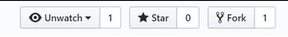
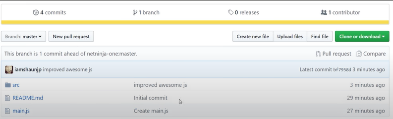
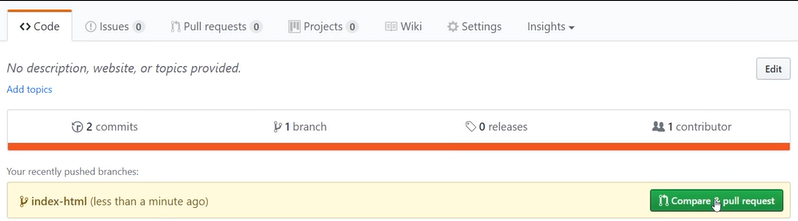
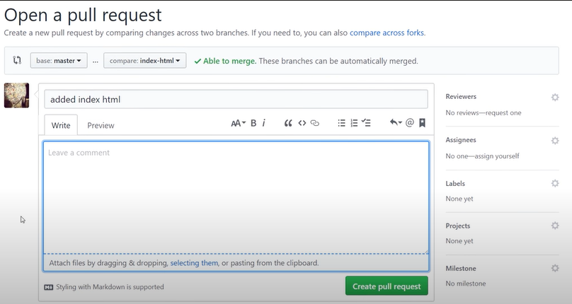
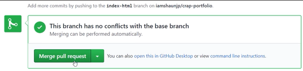

Development Instructions
Running the Project Locally
-
Clone the project into the QGIS plugins folder:
- To locate the folder, open QGIS and navigate to
Settings > User profiles > Open Active Profile Folder. The plugins folder is located within thepythonfolder.
- To locate the folder, open QGIS and navigate to
-
Set up the
QGISDIRenvironment variable:
Point theQGISDIRvariable to the plugins folder. -
Create a Python environment:
Set up and activate a Python environment in your project through the terminal. -
Modify the interface using QT Designer:
- Open the QT Designer installed by QGIS.
- Open the
intelli_geo_dockwidget_base.uifile.- Make modifications.
- Save the file.
-
Compile the interface using
pb_tool:- Install
pb_toolusing pip:bash pip install pb-tool - Install
pyqt5acusing pip:bash pip install pyqt5ac - On Linux, due to a known issue, installing Qt via pip may cause incompatibility with QT5. The solution is to install the following packages:
bash sudo apt-get install python3-pyqt5 sudo apt-get install qtcreator pyqt5-dev-tools sudo apt-get install qttools5-dev-tools - Verify if
pb_tool.exeis located in the Python environment’s scripts folder. - Navigate to the
intelli_geomodule folder in the terminal and run:bash pbt compile
- Install
-
Activate the plugin in QGIS:
- In QGIS, go to
Plugins > Manage and Install Plugins. - Select the "Installed" tab and check the box next to IntelliGeo.
- Close the plugins manager, and the IntelliGeo menu should appear in the Plugins menu.
- In QGIS, go to
Contributing to the Project - External Contributors
If you want to contribute to the IntelliGeo project but are not part of the team, follow these steps to fork the repository:
-
Go to the IntelliGeo repository on GitHub.
-
In the top-right corner, click Fork. For more information, see the GitHub Forking Guide.

-
Clone the forked repository to your local machine, make changes, and commit them to your forked repository.
-
To propose your changes to the main IntelliGeo repository, create a pull request:
- On your forked repository, click New pull request.

GitHub will check for merge conflicts, but only the IntelliGeo team can approve or merge changes.
Contributing to the Project - Team Members
-
Pull the latest version of the
mainbranch:bash git checkout main git pull origin main -
Create a new branch:
bash git checkout -b <new_branch_name> -
Make your changes.
-
Stage your changes:
bash git add . -
Commit your changes:
bash git commit -m "Detailed message about the changes" -
Push the branch for review:
bash git push origin <new_branch_name> -
On GitHub, you will see the new branch. Use the Compare & pull request button to initiate a pull request with the
mainbranch.

- In the Open a pull request window, add a description, select reviewers, and click Create pull request.

- The team will review the changes. If approved, they will merge the branch into the
mainbranch using the Merge pull request button.

- Optionally, delete the old branch after merging.
Documentation
The project's documentation is managed using MkDocs. Documentation is generated from the .md files in the docs folder, with settings configured in mkdocs.yml at the root of the repository.
Testing the Documentation Locally
To test the documentation locally, run the following command:
mkdocs serve
This will start a local server and make your site available at http://127.0.0.1:8000/. Open this URL in your browser to view the documentation.
Building the Site
The build process is automated via GitHub Actions. You can review the workflow in .github/workflows/deploy.yml.
To check the workflow prior to pushing it on GitHub, we use act.
Development Roadmap
Known Issues & Discussions
User Interface
- Message panel layout ```diff
- ENTER hitting checkbox for sending message.
- User deletion rights (GDPR compliance). ```
Backend
- Handle empty inputs in Langchain backend:
diff ! Langchain backend handling empty inputs.